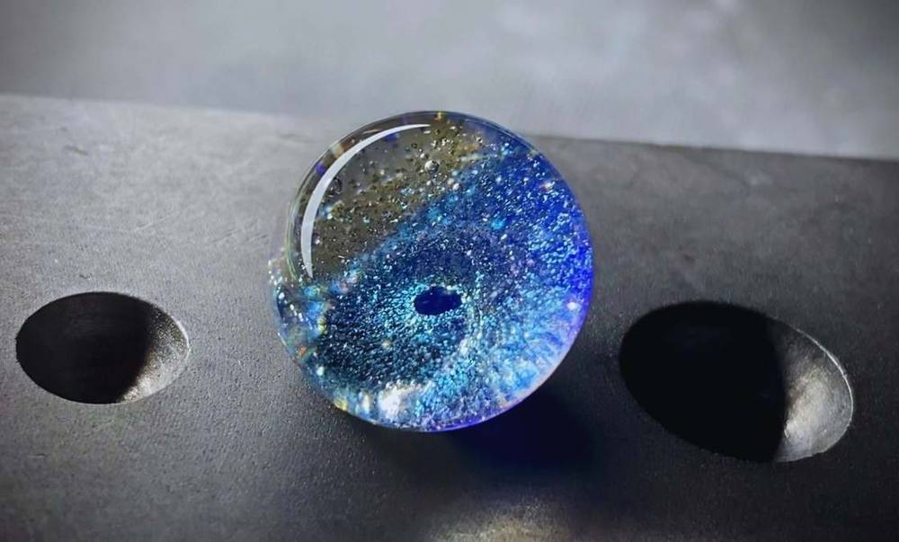

VISIT ・ CONTACT
預約與聯絡
歡迎諮詢訂製、預約體驗課與參觀。兩間工作室皆採預約制，請先預約再到訪。
預約工作室
台南工作室可在下方選擇日期與時段，預約琉璃體驗課或到訪；高雄工作室請以官方 LINE 預約。送出後請加入官方 LINE，並提供匯款帳號末五碼。
行事曆沒有出現？改在 Calendly 開啟
歡迎諮詢訂製、預約體驗課與參觀。兩間工作室皆採預約制，請先預約再到訪。
台南工作室可在下方選擇日期與時段，預約琉璃體驗課或到訪；高雄工作室請以官方 LINE 預約。送出後請加入官方 LINE，並提供匯款帳號末五碼。
行事曆沒有出現？改在 Calendly 開啟